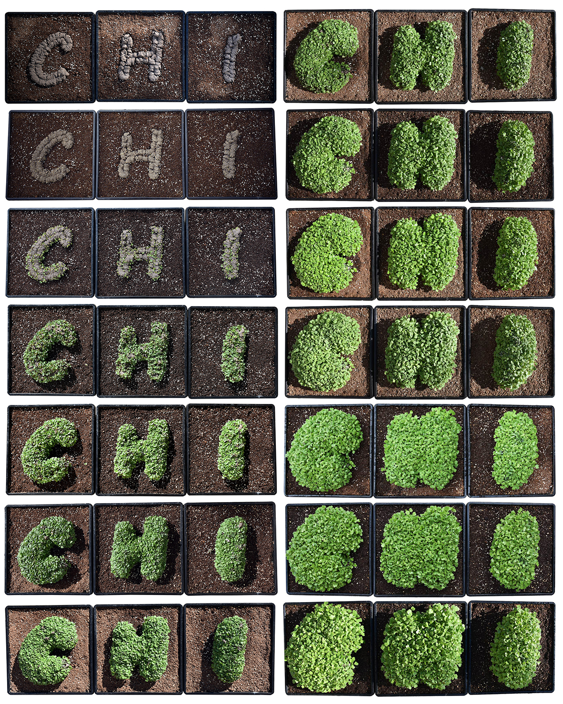

2022, Living Interface

Passwords: LACMA
Artists and designers have been exploring how robotics can be used to interact with our environment in new ways. Robots connect computational design processes with the physical environment, making digital interaction with nature possible. We present a robotic process for planting that enables the computational design of landscapes. We demonstrate how robotic planting can be used for generative art and design by creating a living typeface grown from seed. The robot draws a message by 3-dimensionally (3D) printing a blend of planting media and seeds. When the seeds germinate, the glyphs emerge from their substrate in a flush of green. The letterforms become dynamic living organisms. Artistic agency shifts from the artist to nature.
Project Lead: Hye Yeon Nam & Brendan Harmon
Collaborators: Hunter Gilbert & Nasrin Iravani